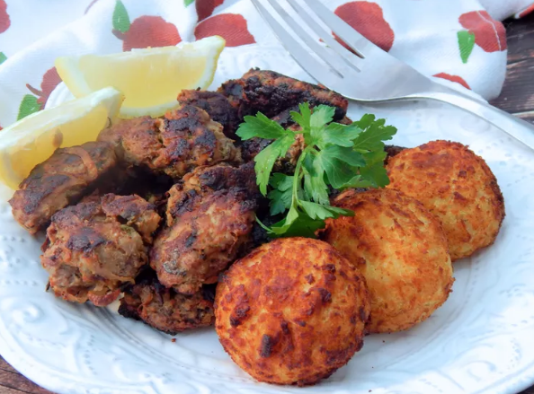

Keftedes

Description
Keftedes (Greek meatballs) is a famous Greek appetizer, commonly served as part of a mezze platter, with some creamy tzatziki sauce and pita breads, and as a side to a slice of delicious traditional Greek Moussaka (sourced from MyGreekDish.com).
Ingredients
Chili:
- Oil for frying;
- Fresh lemon juice;
- Peeled white potatoes;
- Ground beef;
- Grated onion;
- Dry bread crumbs;
- Chopped fresh parsley;
- Crushed dried mint;
- Ground cinnamon;
- Lemon zest;
- Beaten eggs;
- Salt;
- Ground black pepper;
- Lemon wedges.
Steps
- Heat oil in a deep-fryer or large saucepan to 325 degrees F (165 degrees C);
- Place the lemon juice in a large bowl;
- Coarsely grate the potatoes into the lemon juice, stirring well to prevent browning;
- Stir in the ground beef, onion, bread crumbs, parsley, mint, cinnamon, lemon zest, eggs, and salt and pepper;
- Mix well, and shape into oblong balls about 1 inch thick and 2 inches wide;
- Place meatballs in hot oil in batches, whilst being careful not crowd them;
- Place meatballs in hot oil in batches; do not crowd. Fry until golden brown, and cooked through, about 6 to 7 minutes per batch. Serve with lemon wedges.
- Fry until golden brown, and cooked through, about 6 to 7 minutes per batch;
- Serve with lemon wedges.
Main page